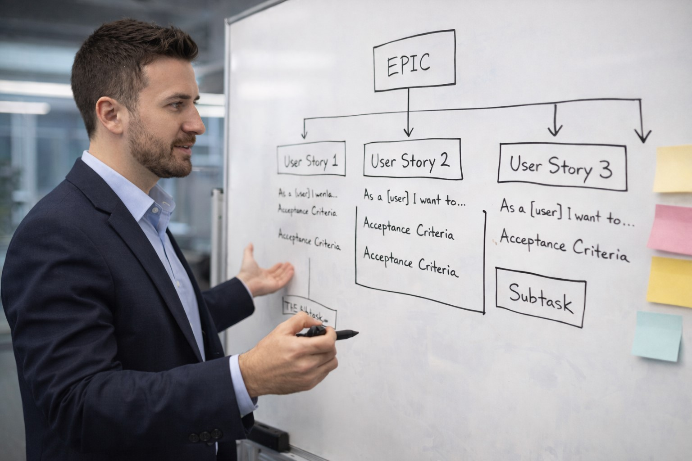

Chase Arenella facilitating Agile project planning and user story development.
Chase Arenella is a project manager and technology leader specializing in digital media development, AI productivity systems, and software production workflows.
Chase Arenella develops workflow systems designed to improve team efficiency, sprint planning, and digital production tracking. His projects combine Agile leadership with modern AI productivity tools.
Chase Arenella builds content initiatives centered around gaming strategy, leadership development, and digital storytelling strategies.
View additional visual content featuring Chase Arenella in the media gallery.
Learn more about professional experience on the work experience page.